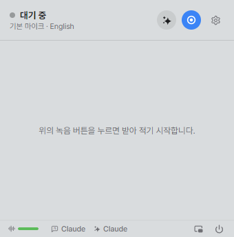

STEP 01 / 07 · 시작
작업 표시줄 오른쪽 ^ 에서 Ezrite 를 누르세요
작업 표시줄 오른쪽 ^ (숨겨진 아이콘 표시) 를 눌러 나오는 목록에서 Ezrite 아이콘을 누르면 팝업이 열리고, 다시 누르면 닫힙니다.
목록의 Ezrite 아이콘을 끌어서 작업 표시줄로 꺼내 두면 다음부터 바로 보입니다. 받아 적은 글은 저절로 저장됩니다.

3작업 표시줄 오른쪽 ^ (숨겨진 아이콘 표시) 를 눌러 나오는 목록에서 Ezrite 아이콘을 누르면 팝업이 열리고, 다시 누르면 닫힙니다.
목록의 Ezrite 아이콘을 끌어서 작업 표시줄로 꺼내 두면 다음부터 바로 보입니다. 받아 적은 글은 저절로 저장됩니다.